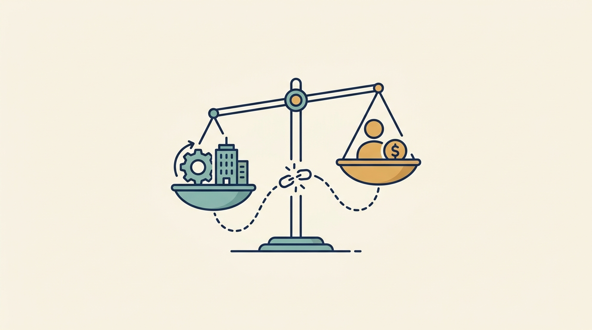

Part II — ALIGN: Clarify Who Decides and What Is at Stake
Compare Incentives and Stakes: Equity, Carry and Jobs

Image generated by Google Gemini (gemini-3-pro-image-preview)
Part II — ALIGN: Clarify Who Decides and What Is at Stake

Image generated by Google Gemini (gemini-3-pro-image-preview)